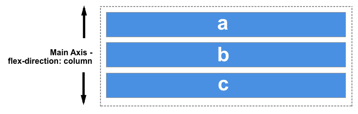

CSS évolution et propriétés
Introduction
CSS 1 1996
Avant HTML 4, la mise en forme se faisait grace à des éléments HTML dediés tels que: b font br... Ce qui donne des difficultés lors des maintenances, et qui était long est minutieux.
Le 17 Décembre 1996 arrive le HTML 4 avec une nouvelle facon de mettre en forme: le Cascading Steel Shit: https://www.w3.org/TR/REC-CSS1-961217.html
Cela permet :
- Séparer le HTML du Style.
- Avoir plus de possibilités de mise en forme.
- Éviter les erreurs à force de répétition.
- de changer de style très rapidement.
- de définir un style appliqué à plusieurs pages.
CSS 2 1998
CSS 2 à était une grande mise à jour typographique pour le web. Il inclut aussi l’utilisation des sélecteurs, le box modèle…
Margin
Padding
Content
En parallèle du CSS 2.1, le CSS 3 à était développé.
Flex box
Le module des boîtes flexibles, aussi appelé « flexbox », a été conçu comme un modèle de disposition unidimensionnel et comme une méthode permettant de distribuer l'espace entre des objets d'une interface ainsi que de les aligner. Dans cet article, nous verrons les fonctionnalités principales des flexbox que nous approfondirons ensuite dans d'autres articles.
Lorsqu'on décrit les boîtes flexibles comme une méthode de disposition unidimensionnelle, on indique en fait que les flexbox gèrent une seule dimension à la fois : une ligne ou une colonne. Ce modèle est à comparer au modèle bidimensionnel de la disposition en grille (CSS Grid) qui contrôle à la fois les colonnes et les lignes.
Les deux axes des boîtes flexibles
Lorsqu'on travaille avec les boîtes flexibles, deux axes interviennent : l'axe principal (main axis en anglais) et l'axe secondaire (cross axis en anglais). L'axe principal est défini par la propriété flex-direction et l'axe secondaire est l'axe qui lui est perpendiculaire. Tout ce que nous manipulons avec les boîtes flexibles fera référence à ces axes.
L'axe principal
L'axe principal est défini par la propriété flex-direction qui peut prendre quatre valeurs :
- row
- row-reverse
- column
- column-reverse

Si on choisit la valeur column ou column-reverse, l'axe principal suivra la direction de bloc (block direction) et progressera le long de l'axe perpendiculaire au sens d'écriture.

L'axe secondaire (cross axis)
L'axe secondaire est perpendiculaire à l'axe principal. Ainsi, si flex-direction vaut row ou row-reverse, l'axe secondaire suivra l'axe des colonnes.

Si l'axe principale est column ou column-reverse, l'axe secondaire suivra celui des lignes (horizontales).

Comprendre les liens entre les différents axes est crucial lorsqu'on commence à aligner/justifier des éléments flexibles sur un axe ou l'autre grâce aux fonctionnalités et propriétés des boîtes flexibles.
Grid
Le module CSS Grid layout (modèle de disposition en grille) est un module de la spécification CSS qui permet de créer des mises en page en divisant l'espace d'affichage en régions utilisables par une application ou en définissant des relations de taille, position et d'empilement entre les éléments HTML.
Comme les tableaux, la grille permet d'aligner des éléments sous forme de colonnes et de lignes mais à la différence des tableaux, la grille n'a pas de structure de contenu. Ainsi, on peut créer de nombreuses mises en page qui n'auraient pas été possibles avec les tableaux. Ainsi, les éléments fils d'un conteneur en grille peuvent être positionnés afin qu'ils se chevauchent ou qu'ils se comportent comme des éléments positionnés.
Un exemple simple
Dans l'exemple qui suit, on montre comment utiliser une grille avec trois pistes en colonnes pour laquelle les nouvelles lignes créées mesureront au moins 100 pixels et auront au plus la taille automatique (définie par leur contenu). Les éléments sont placés sur la grille grâce aux numéros des lignes horizontales et verticales.
Un
Deux
Trois
Quatre
Cinq
Six